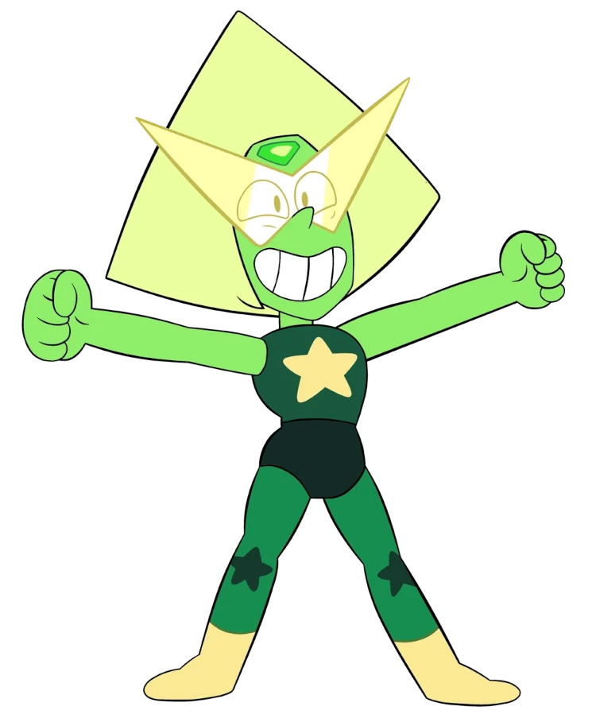

E mais uma vez estamos aqui, mais um site dedicado pra você.
Agradeço muito por tudo que você já fez e proporcionou pra mim.
cada segundo foi importante pra mim, mesmo com cada dificuldade, foi você quem estava ali me ajudando e me mantendo firme e forte em cada batalha.

Esse site serve pra justamente te agradecer por estar comigo até agora (e espero que continue kk), pois você foi um dos seres mais importantes na minha vida com certeza (facilmente no meu top 5), queria te dizer que amei cada momento contigo, seja bom ou ruim, todos foram importantes pra nossa relação se manter viva até hoje. você foi quem fez eu me manter naquele trabalho por tanto tempo (9 meses slk parça), mesmo sofrendo ali com o salario vc não me deixou cair em nenhum momento, esteve ali nas minhas crises, nas minhas situações financeiras horriveis kk. mas o importante é que VOCÊ tava la (slk parceira dms tmj).
Contudo, também quero dizer que pode contar comigo, eu estou disposto a te ajudar, não importa a situação, a gente sempre pode tentar resolver as coisas juntos, assim como combinamos antes mesmo de nos relacionar. eu te amo e te quero bem, te quero ver feliz e alegre e que consiga realizar cada desejo e resovler cada problema que aparecer pela frente.

Com tudo isso quero dizer que te amo, e quero que isso continue até o final de nossas vidas(ou até a espiritualidade deixa né, nunca se sabe), mas minha vontade é que dure até o final das nossas vidas, e que passamos por todos os momentos dificeis e bons juntos. quero morar com vc e ter um bebe ou dois, ter um cachorro, um gato e tudo mais que der vontade de cuidar na hora kk.
Quero ser todo bobinho com você, ser brincalhão e nerd 🤓 e te fazer sorrir sem parar (de risadinha em risadinha... hehe). mas enfim foi isso, as outras coisas eu não consigo descrever com palavras pra descrever o quanto eu te amo! você é incrivel amor, TE AMO!